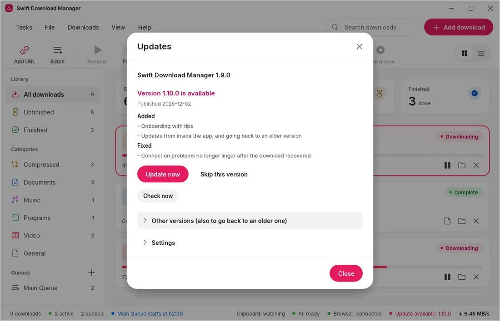
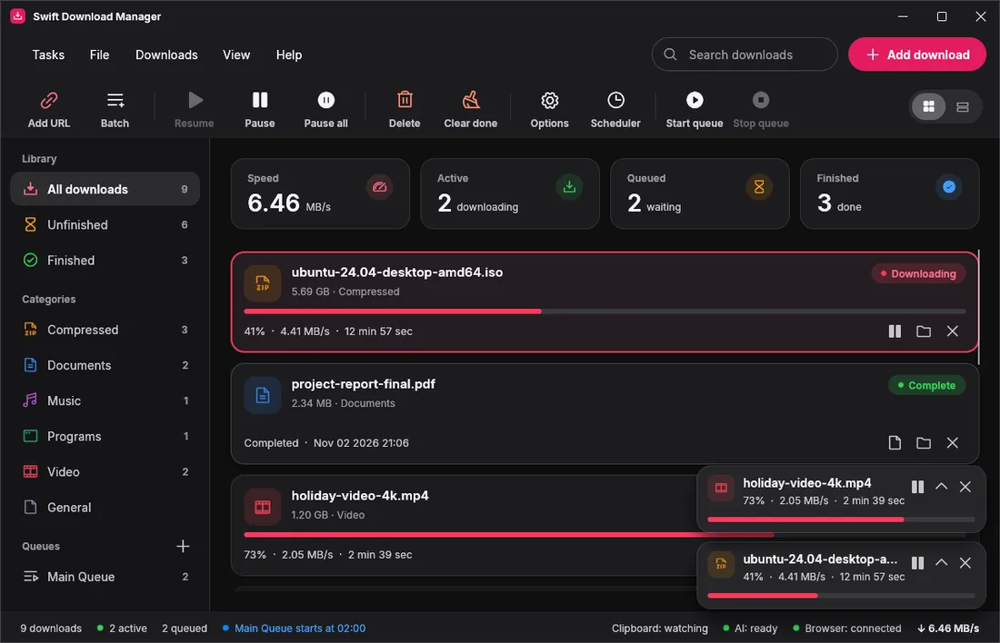
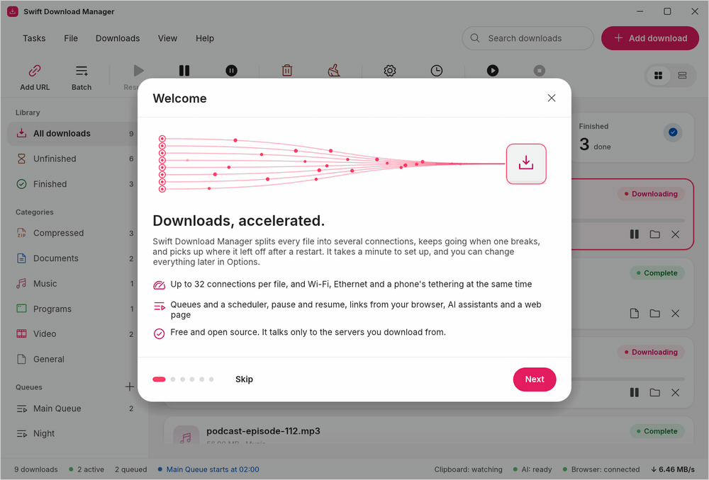
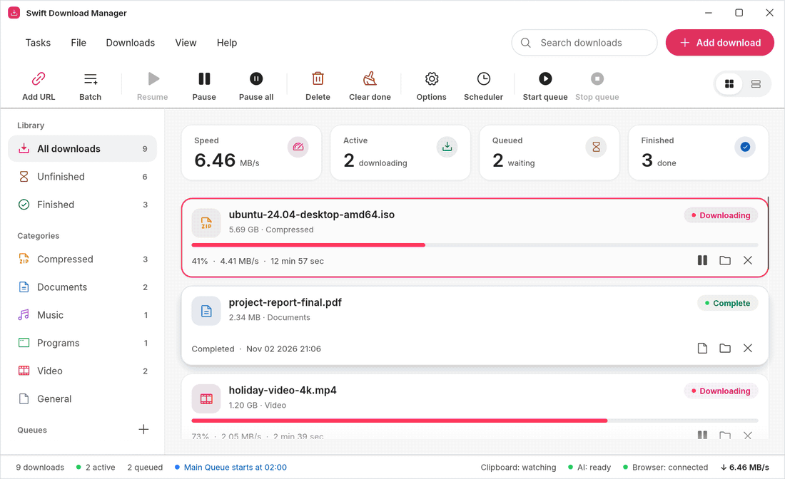
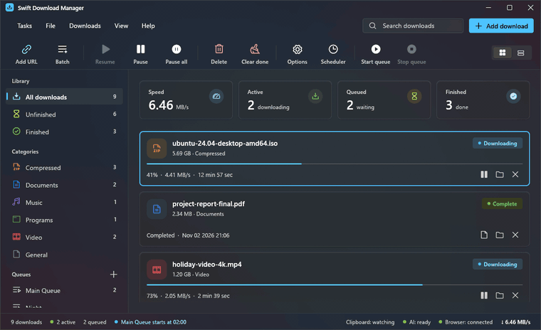
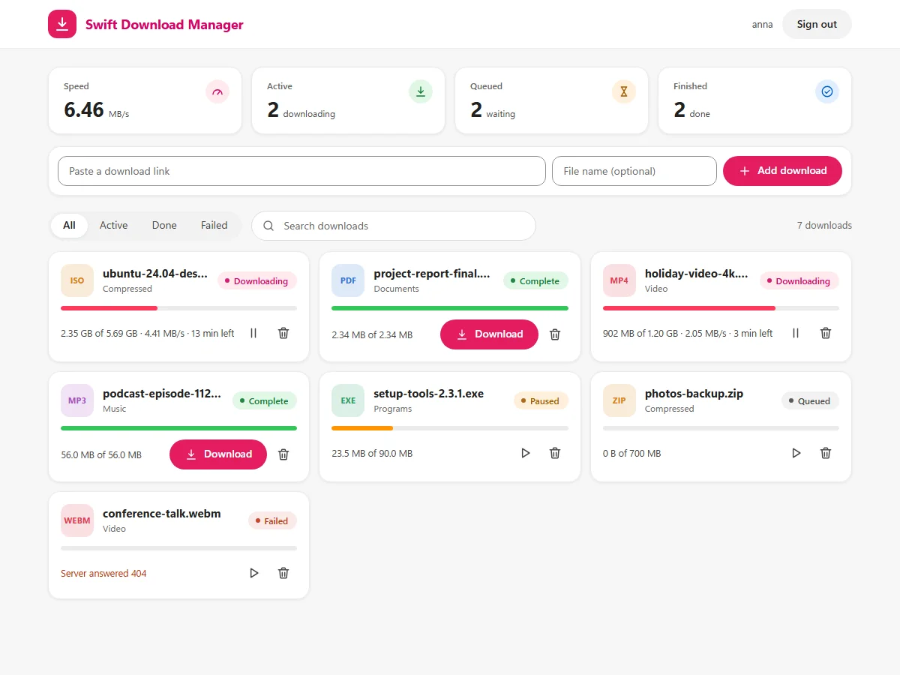
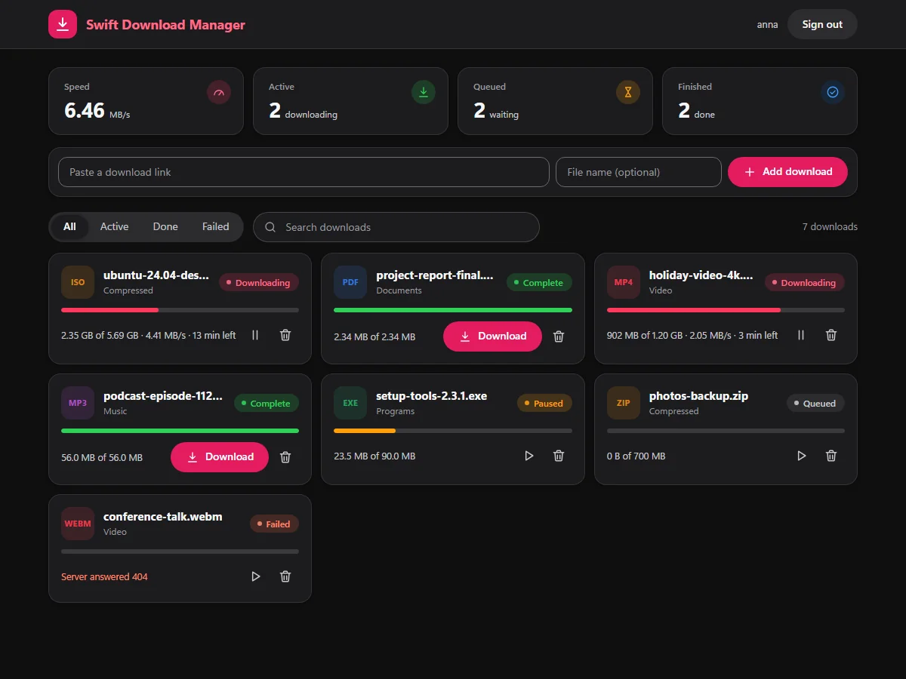
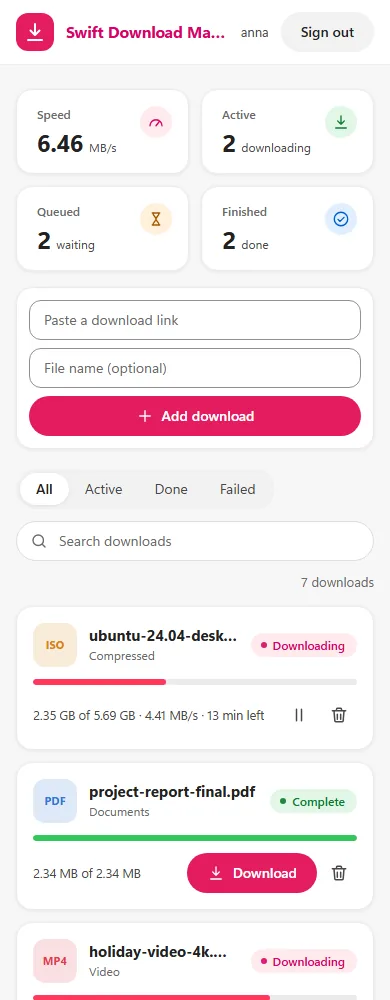

Split, fetch, merge.
Each download is cut into parts that load at the same time. When a part finishes, a free connection takes half of the biggest one left, so the last stretch is never a single slow tail.
Swift Download Manager splits each file into up to 32 connections, picks up where it left off after a restart, and can use Wi-Fi, Ethernet and a phone's USB tethering at the same time. Free and open source, for Windows, Linux and macOS.
Apache-2.0 licence No ads, no account, no telemetry Signed releases built by GitHub

A browser fetches a file down one pipe. Swift Download Manager opens several, keeps them all busy, and never starts over when one breaks.
Each download is cut into parts that load at the same time. When a part finishes, a free connection takes half of the biggest one left, so the last stretch is never a single slow tail.
Resume works after you close the app, restart the computer or lose the line. Broken connections are retried, and busy servers get fewer of them.
Tick the networks to use and every download spreads over all of them, so the speeds add up. Plug in a phone while a download runs and it joins within seconds.
An add-on for Chrome, Edge, Brave, Opera and Firefox catches downloads, passes your login along, adds a right-click entry, and spots the videos and sounds on a page. Close the window and downloads keep going from the tray.
Queues with start and stop times, daily or once, and an option to close the app when they finish.
A web page and a Docker image: people sign in, the server downloads, everybody gets their own folder.
No ads, no account, no telemetry and no update pings. It only talks to the servers you download from.
SHA-256 checks on finished files, and releases whose programs, packages and checksums are signed.
Help → Check for updates shows what is new and installs it with one button. The same list offers every older version too, so a release that does not suit you is one click from being undone. Your downloads, queues and settings stay.



Every picture below was drawn by the app itself. Pick a look and watch the whole window change, title bar included. Text stays easy to read in every theme: tests check it.

Coral, WinUI 3, Files, Carbon, Blue, Green, Black, Purple, Pink, Orange, Teal, Gold, Nord, Dracula and Mocha. Switching glides from one look to the next, and the app follows your system's light or dark setting unless you say otherwise.
Colours, translucency, sizes and type come from the design tokens of Microsoft's own controls. The system accent, light and dark, the transparency switch and a Mica material made from your wallpaper are all followed live.
UISettings, the source WinUI uses, and followed while the app is open. Or pick your own.
Windows draws Mica for WinUI apps, but this app draws with OpenGL, whose window Windows lays over a plain white sheet. So the app paints the same material itself from your wallpaper, tinted with the colours of MicaController. It stays opaque and looks the same on every graphics card. On other systems the theme uses solid colours and the app's own typeface.
Swift Download Manager speaks the Model Context Protocol. Ask an assistant to download a list of links, check what is still running, or retry what failed. The app, not the assistant, decides what is allowed.
See what is going on. Nothing changes.
Add, pause, resume, move and remove. No file is ever deleted.
The overall speed limit, networks and tidying up.
The page on the right is the real web interface, running against pretend data right here in your browser. Pause something, add a link, open the settings: nothing is downloaded and nothing leaves this page.
It loads the real page with a pretend server. Nothing is downloaded.



Free, with nothing to sign up for. Every file is built by GitHub from the release's source code and listed with its checksum.
Pick a tab below, or let the page suggest the right file for the computer you are on.
Read what changed, grab the files of any version, or open its web interface in a preview (versions from 1.6 on have one).
Yes. It is open source under the Apache License 2.0: no ads, no account, no paid tier. It only contacts the servers you download from, and it never sends usage data anywhere.
Like IDM it has a friendly window and a browser add-on, but it is free, open source and runs on Windows, Linux and macOS. Like aria2 it is open and scriptable, but it has a graphical window, and a web interface with a Docker image for teams. Details are in the comparison.
The programs and installers are signed with a certificate that belongs to this project, not with a paid one from a certificate authority, so Windows SmartScreen does not know the publisher yet. You can verify the signature and the GPG-signed checksums yourself; SECURITY.md lists the fingerprints.
Yes, but a Mac app can only be built on a Mac, so there is no download here: build it with a few commands (see the macOS tab). The same goes for the BSDs and other platforms, which the Docker toolchain can cross-compile for command-line use.
No. Assistants can add, pause, resume, move and remove entries from the list, but never delete a file from disk and never choose a folder. You can also limit them to looking only, restrict the sites they may use, and read a log of everything they did.
Yes. The browser add-on passes your cookies along, saved site logins and a per-download referrer are supported, and there is a proxy setting plus overall and per-download speed limits.
Get Swift Download Manager and see how quick a big file can be.